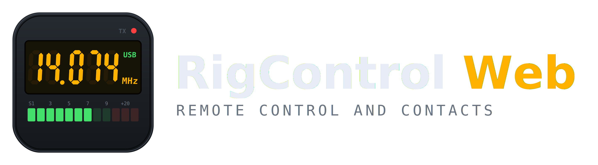
Open-source web and desktop application for remote amateur radio operation via Hamlib. Real-time audio, video, spectrum, CW keyer, and propagation data in your browser.
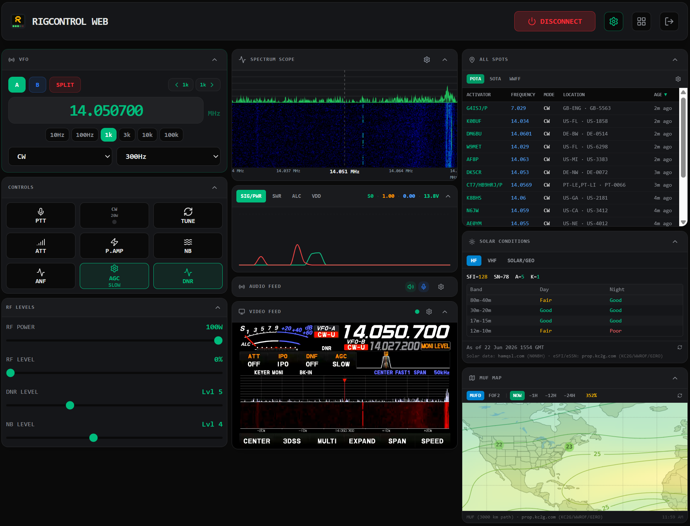
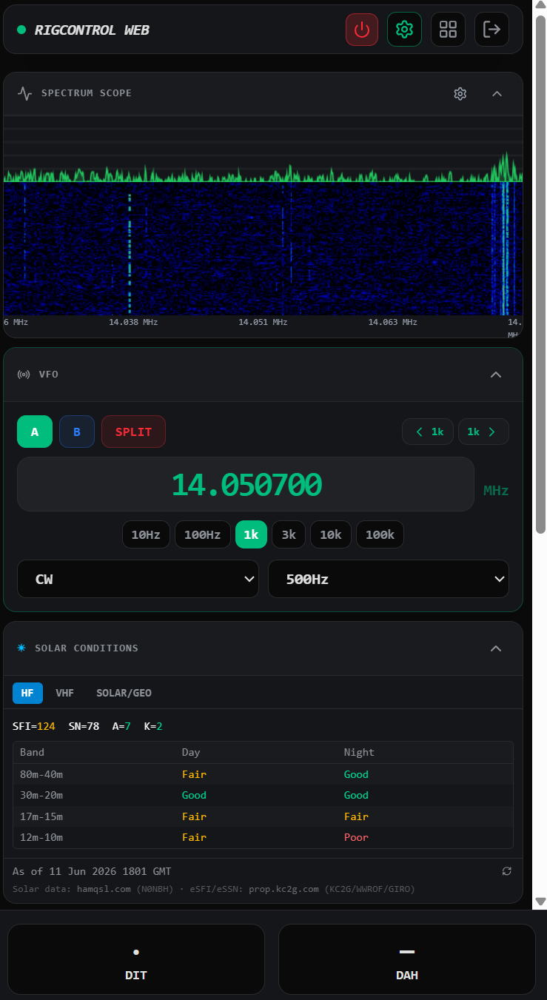
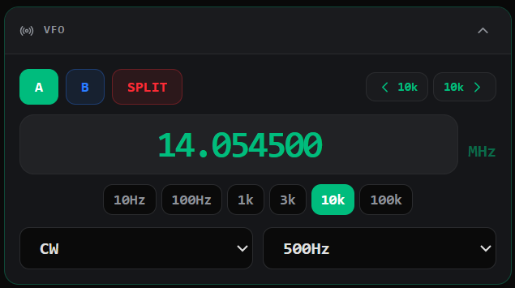
Tune your radio with configurable step sizes from 10 Hz to 100 kHz. VFO A/B switching, split operation, and mode/bandwidth selection.
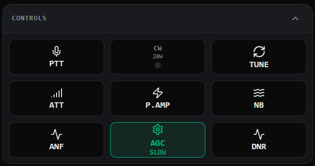
One-tap PTT, TUNE, ATT, pre-amp, noise blanker, ANF, AGC, and DNR. CW indicator shown at a glance.
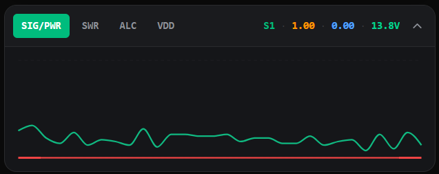
Live S-meter, SWR, ALC, and VDD traces on a scrolling chart. Tabbed views let you watch the metric that matters.
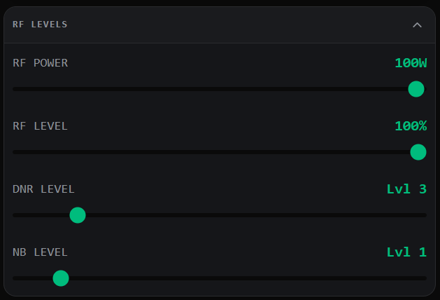
Adjust RF power, RF gain level, DNR level, and noise blanker level with drag sliders.
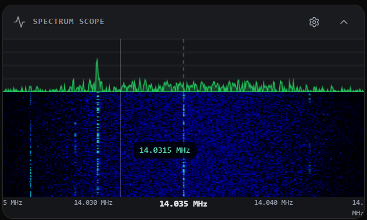
Live panadapter and waterfall display. Supports Hamlib UDP multicast (Icom) and direct USB-SPI from the Yaesu FT-710. Click anywhere on the scope to tune.
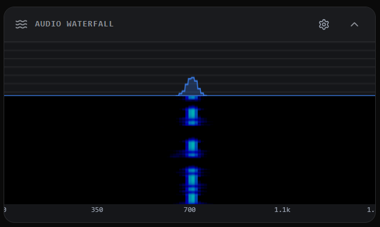
Visualize received audio as a spectrum plot and scrolling waterfall. Useful for spotting CW signals and tuning to the correct audio frequency.
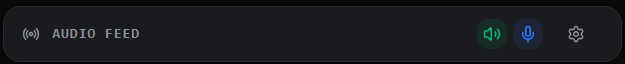
Bidirectional audio streaming. Mute/unmute speaker and mic independently. Join from any browser on your network.
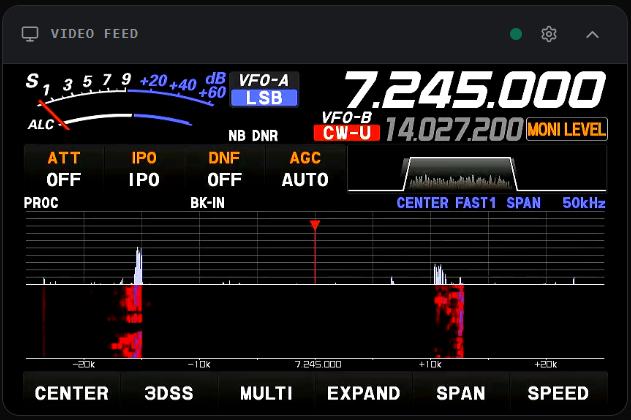
See your radio's front panel remotely via H.264 video. Feed an HDMI capture card into the host and stream to any browser client.
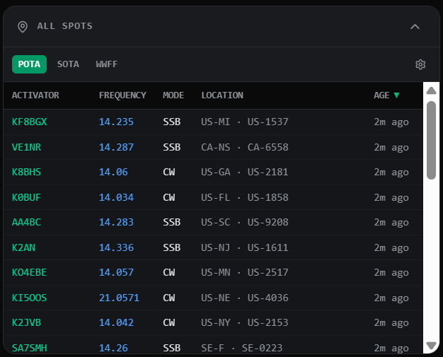
Live activator spots with band, mode, and age filtering. Click any spot to instantly tune the VFO and set the mode.
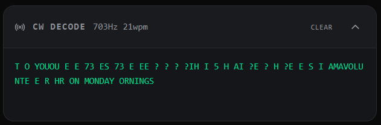
Real-time Morse code decoding powered by GGMorse. Shows decoded text, estimated pitch, and speed in WPM.
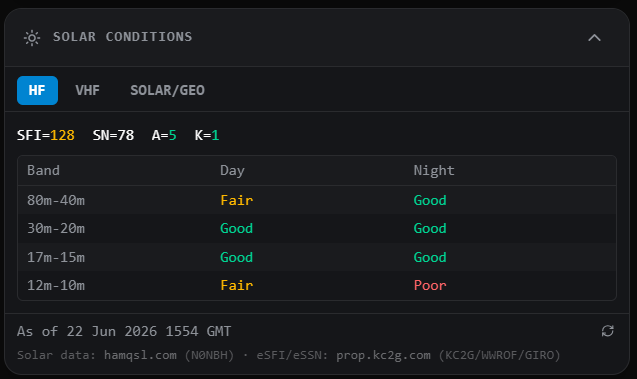
HF band conditions (day/night), VHF propagation alerts, SFI, sunspot number, A-index, and K-index from hamqsl.com and prop.kc2g.com. Know what's open before you tune.
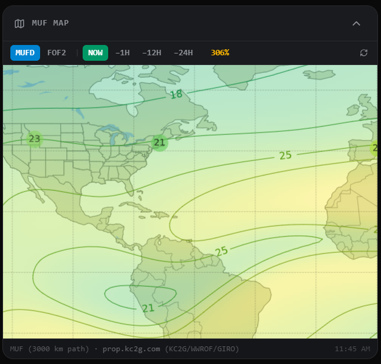
Zoomable world propagation map from prop.kc2g.com. MUFD and foF2 views with historical time slots. Scroll-zoom, drag-pan, and pinch-to-zoom.
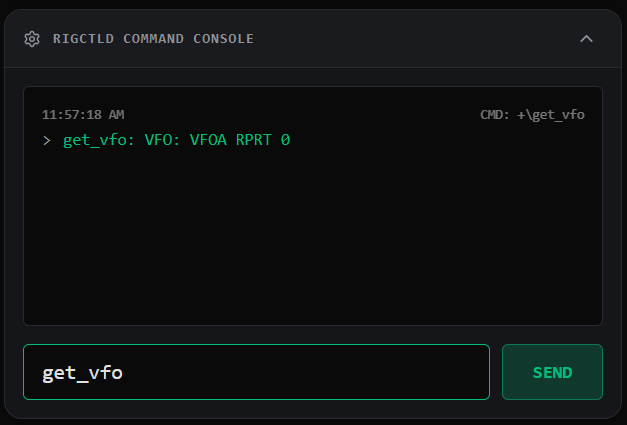
Send raw Hamlib commands directly to rigctld and see the responses. Useful for debugging and advanced rig control.
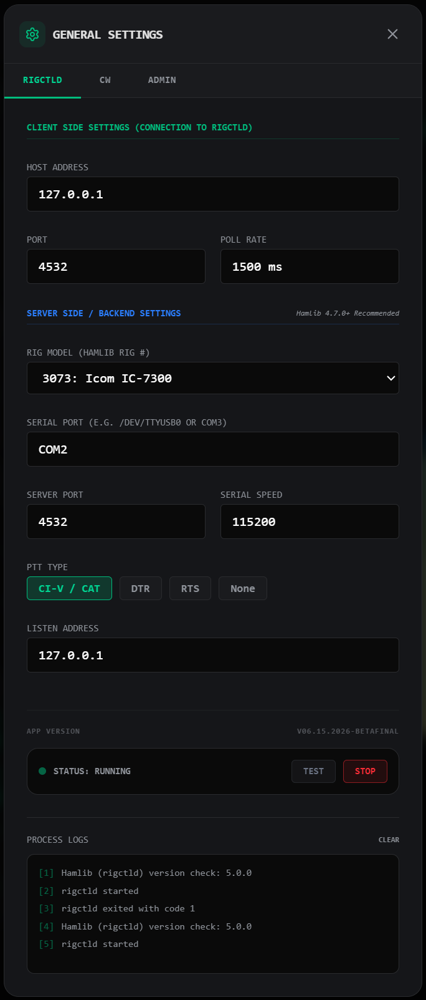
Configure rigctld connection, rig model, serial port, CW keyer mode and speed, sidetone, and key bindings. Manage user accounts, sessions, and audit logs from the Admin tab.
NSIS installer
DMG (Universal)
AppImage, DEB, RPM
Remote client via HTTPS